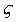
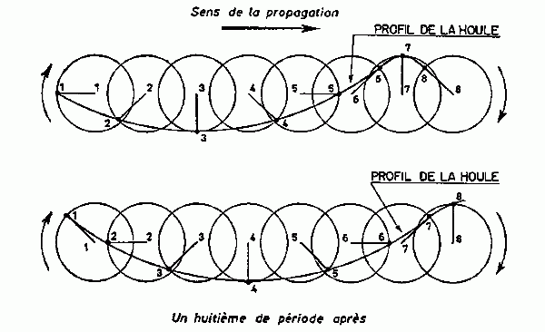
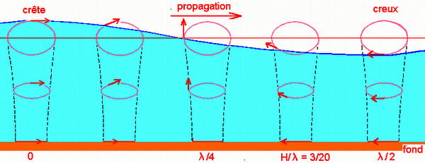
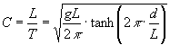
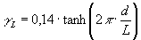
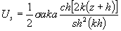
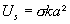
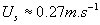

|
|
|
|
|
Définition
La surface de la mer présente
généralement une suite indéfinie d'ondulations parallèles
presque identiques qui se propagent de façon sensiblement uniforme
vers le rivage. On appelle houle cet ensemble d'ondulations ou de vagues.
La houle est un mouvement oscillatoire des couches superficielles de l'eau
du au frottement du vent sur la surface. Plus le vent est fort et plus
la distance de frottement sur l'eau est grande, plus la houle est forte,
c'est ce que l'on appelle le « fetch ».
(x,y,t)= (x,t)
: l'élévation de la surface libre par rapport au niveau
de l'eau au repos,
h(x,y)=h(x) : la profondeur par rapport à la surface libre de l'eau
au repos,
p(x,y,t) : la pression,
H : la hauteur de houle (dénivellation
maximale entre une crête et un creux successifs),
L : la longueur d'onde (distance séparant deux crêtes successives)
T : la période de la houle (temps qui sépare le passage
de deux crêtes successives en un point fixe),
a : l'amplitude de la houle (égale à la moitié de
la hauteur).
g : la cambrure (le rapport H/L)
c : la célérité (la vitesse moyenne de propagation
des crêtes, i.e. L/T)
d : la profondeur (la profondeur au repos)
|
| |
Mécanisme
Selon la théorie de Airy, les
particules décrivent des orbites circulaires qui diminuent de taille avec
la profondeur. Contrairement aux idées reçues, il n'y a pas
de transfert horizontal de matière. La houle est caractérisée
par sa longueur d'onde L dans le cas d'une houle monochromatique et par
sa hauteur H. Cette longueur d'onde est proportionnelle au carré de la période,
de 1 m à plus d'1km. Certaines vagues de grande longueur d'onde peuvent
traverser les océans. (En Mer du Nord, leur hauteur peut atteindre
30m. Elles sont générées par un vent fort (30 m/s) soufflant pendant plus
de 6 heures et leur période est de 15 secondes pour une longueur d'onde
de 350 m et une vitesse de l'ordre de 100km/h). |
|

Trajectoire des particules selon la théorie de Airy.
|
| Les vagues ne sont plus stables
lorsque leur cambrure atteint une valeur limite qui peut-être atteinte
soit par un accroissement local du creux comme en haute mer ou lorsque la
profondeur diminue comme sur les côtes. Dans ce dernier cas, les orbitales
s'écrasent en ellipses puis, du fait du frottement sur le fond, la vague
déferle sur la plage: l'eau est animée d'un mouvement de va et vient. |
|

Modification de la forme des orbitales en zone peu profonde.
|
En plus de l'oscillation, le
frottement du vent entraîne la couche superficielle de l'eau, où
la densité de l'eau est quasiment constante, en créant des
courants de surface qui suivent le trajet des vents dominants.
La période des vagues va de la seconde à dizaine de secondes, elles sont
très petites devant la période de Coriolis si bien que la
rotation de la terre peut-être négligée pour la dynamique
des vagues. Leur mouvement est quasi-irrotationnel. |
La
réfraction
La direction de propagation de la houle incidente sur la côte fait
un angle a avec la ligne de côte moyenne.
Il faut toutefois prendre en compte le phénomène de réfraction
de la houle. En effet, lorsque celle-ci se propage dans un milieu à
profondeur variable, sa célérité varie. L'expression
générale est la suivante :

En conséquence, la houle tourne de façon à ce que ses
lignes de crêtes deviennent parallèles aux lignes bathymétriques,
phénomène illustré par le schéma ci-dessous.
Cet état d'équilibre
n'est toutefois pas atteint si la houle est très oblique.
De plus, un haut-fond de dimension limitée joue le rôle d'une
lentille convergente, comme l'illustre le schéma ci-dessous :
Ce cas est représentatif des effets de la réfraction sur
une barre littorale entrecoupée de canaux de retours.
|
Le
déferlement
Définition
Lorsque la houle approche de la plage, la diminution de la profondeur de
l'eau entraîne la réduction de la longueur d'onde.
Cette réduction de la longueur d'onde peut provoquer, si elle est
suffisante, la destruction totale ou partielle de la vague : on assiste
au déferlement.
La mise en équation
Ce phénomène est consécutif à l'approche d'une
valeur limite de la cambrure de la vague. Cette cambrure limite peut être
exprimée en fonction de la profondeur d et de la longueur d'onde
L de la houle :
( Miche, 1944
)
Les différents types de déferlement
Le déferlement peut se produire selon plusieurs types qui sont représentés
sur les schémas ci-contre. Le type de déferlement est fonction
de la pente de la plage ainsi que de la cambrure naturelle de la houle considérée.
Conséquences
Le déferlement va ainsi transmettre de l'énergie aux sédiments
formant la plage et provoquer leur mise en mouvement. On entre alors dans
le domaine du transport sédimentaire. |
|
Les courants de houle
Différents courants
sont par induits par la houle. L'un de ces courants est facilement observable
dans la nature. Il correspond à la dérive d'un bateau "à l'arrêt' en haute
mer nous verrons que ce courant est caractérisé par le courant de Stokes.
Lorsque la théorie de Stokes est développée au-delà
du premier ordre, on trouve un transport de matière dans la direction
de propagation des vagues : les particules décrivent des orbites
qui ne sont pas closes et qui se déplacent ainsi dans le sens de
propagation des vagues.
Ce déplacement a été calculé par Stokes (1847).
Il s'effectue à une vitesse donnée par l'expression suivante
:

Un ordre de grandeur de ce
courant peut-être donné par sa valeur à la surface
:

Pour une houle d'amplitude
a=1.5m, de période T=6s et une profondeur h=20m, on tire de l'abaque
sur la longueur d'onde en fonction de la profondeur d et de la période
T : L=55m
D'ou: 
|
Les fronts d'onde produisent par
réflexion une dérive littorale lorsqu'ils sont obliques à la ligne de côte.
Ce courant littoral de houle est produit par l'incidence oblique de la houle
qui provoque un courant résultant dans le sens de propagation des
vagues, comme l'indique le schéma ci-contre.
Parfois il y a une barrière coralienne. L'eau franchissant cette
barrière après le déferlement se trouve en grande partie
canalisée entre la barrière et le rivage. Elle peut véhicule
de grandes quantités de sable. Quand elle ressort par les passes
ou par les failles, le courant de retour peut être très puissant. |
|
|